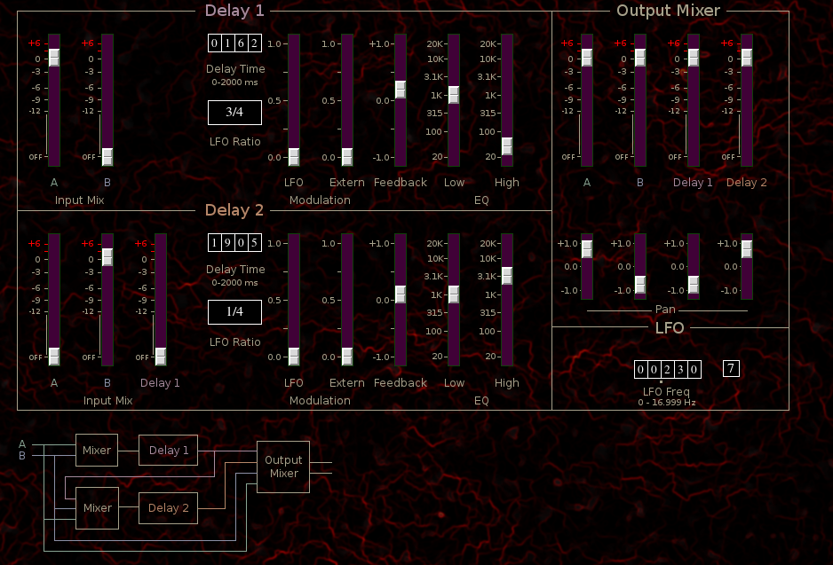

Dual delay line
Delays 1 and 2 are identical except that Delay 1 may serve as an input to Delay 2.
Input Mix A Dry signal A input mix to delay lines 1 and 2
Input Mix B Dry signal B input mix to delay lines 1 and 2
Delay 1 (Delay 2 only) Delay 1 amount sent to delay 2
Delay Time tumbler in milliseconds
LFO Ratio button, LFO frequency ratio
LFO Delay time modulation be LFO
Extern Delay time modulation by external signal
Low Lowpass filter cutoff
High Highpass filter cutoff
A Dry signal A output mix
B Dry signal B output mix
Delay 1 Delay 1 wet signal output mix
Delay 2 Delay 2 wet signal output mix
Pan A
Pan B
Pan Delay 1
Pan Delay 2
The LFO tumbler sets reference frequency in Hertz. The frequencies of Delay 1 LFO and Delay 2 LFO are relative to this value. The small button to the right of the tumbler sets delay time to an integer value between 1 and 7.
A Dry signal A output mix
B Dry signal B output mix
Delay 1 Delay 1 wet signal output mix
Delay 2 Delay 2 wet signal output mix
Pan A
Pan B
Pan Delay 1
Pan Delay 2